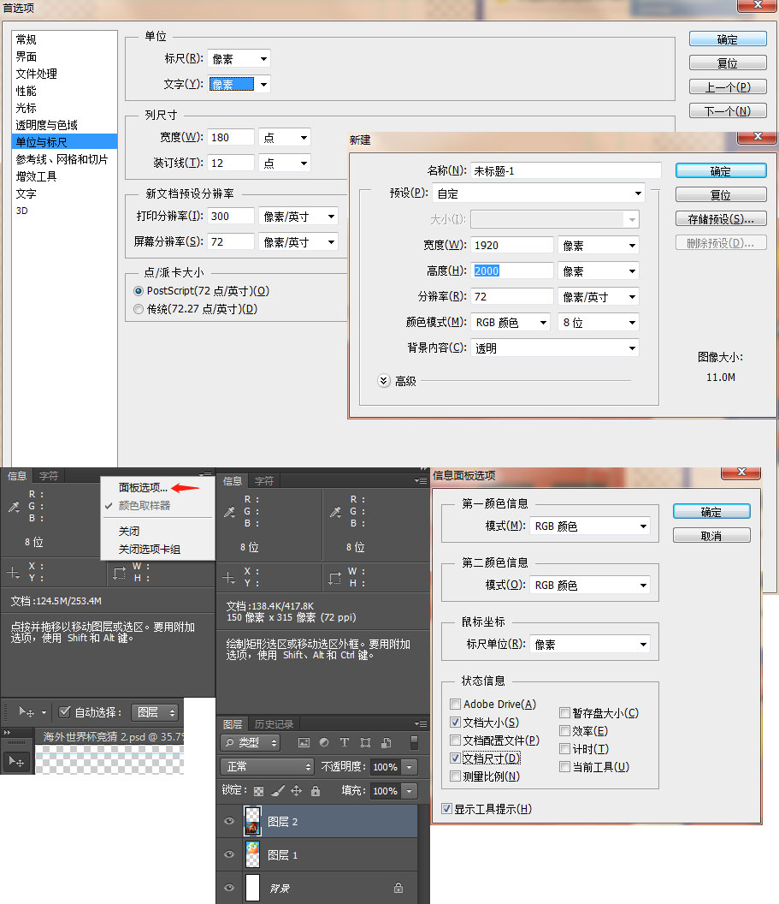

photoshop
主要是四大面板：信息、字符、图层、历史记录。别忘了“新建工作区”

做css精灵时需要增加（往下或其他方向）画布大小，图像->画布大小
切图若碰到阴影，可以先转换为智能对象
尺标，快捷键ctrl+r
马克鳗
官网：官网交费版支持图片和psd，官网体验版不能保存标注后的图片
我的体验：
长度自动测量 我的 win7 快捷键是 ctrl ，Tab 会将长度标记旋转90度，当长度标记水平时，同时按住 ctrl 并且拖动该水平标记，则会显示水平间距
已下载破解版（只支持图片，不支持psd，且永远不要更新），安装步骤：
1. 安装 Adobe AIR - 马克鳗使用Adobe AIR技术开发，请先下载安装
2. 安装 MarkMan.air - 双击打开即可
3. 安装若提示“安装 Adobe AIR 时出错。管理员可能不允许安装此软件。请与管理员联系”，需要先下载工具删除 Adobe AIR，重新安装（右键以管理员身份运行）